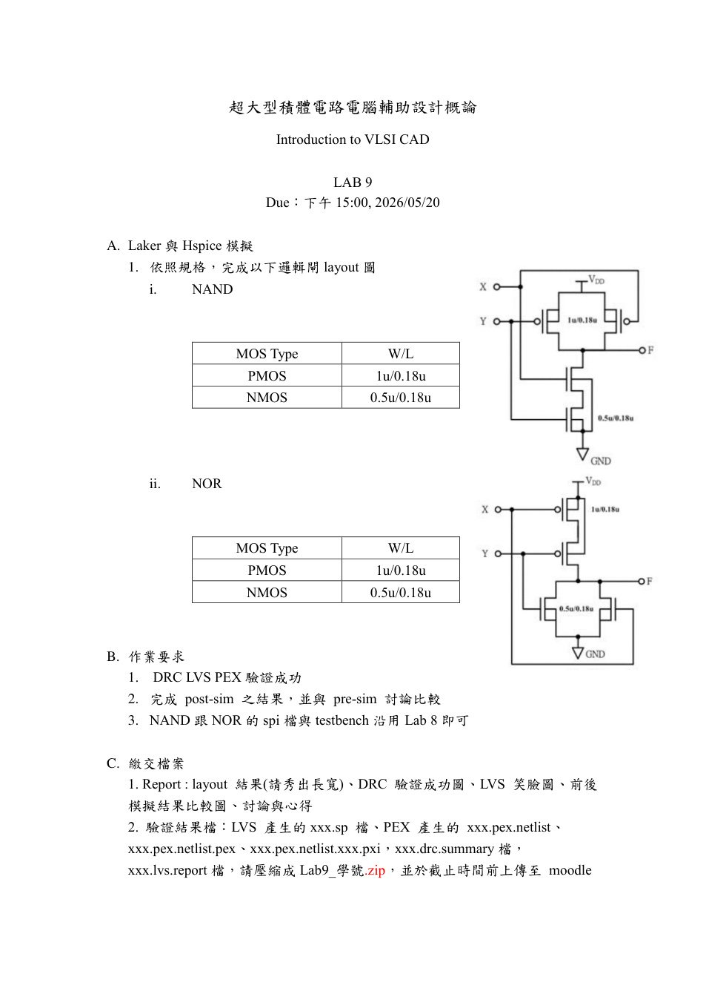
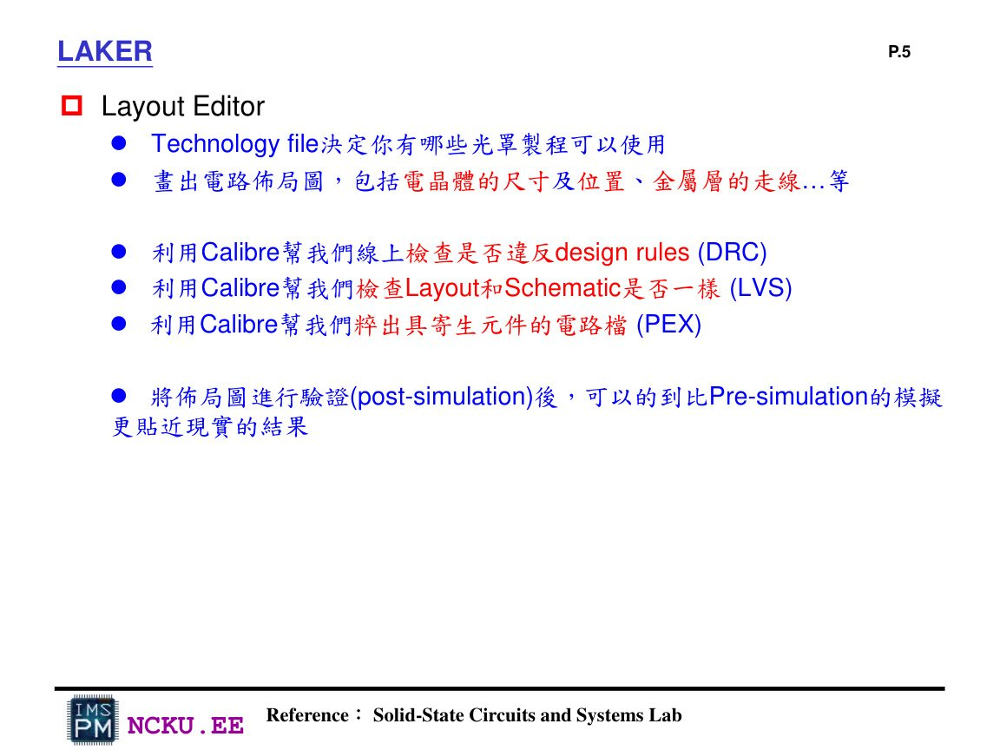
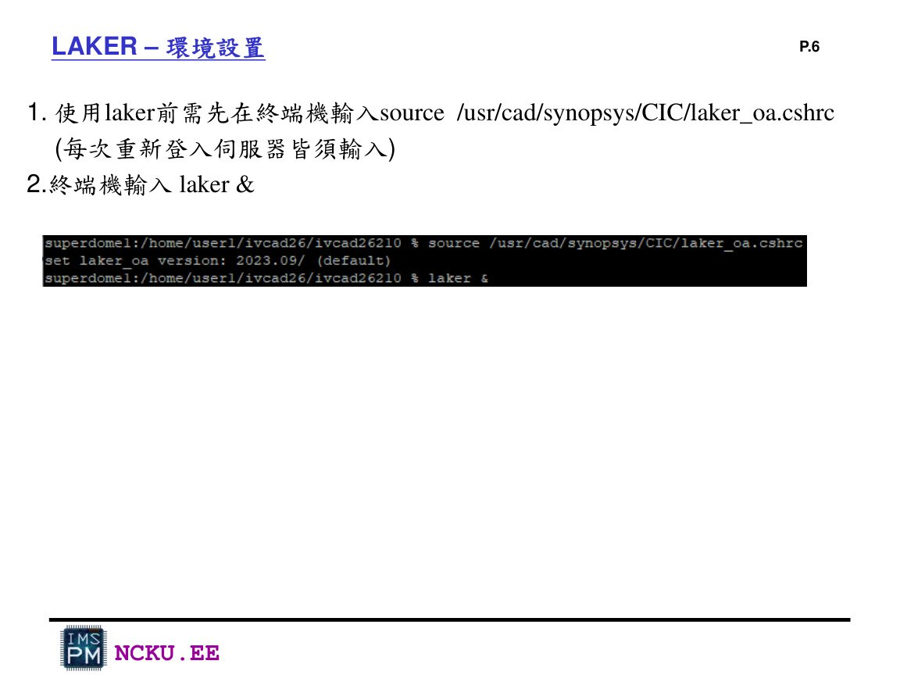
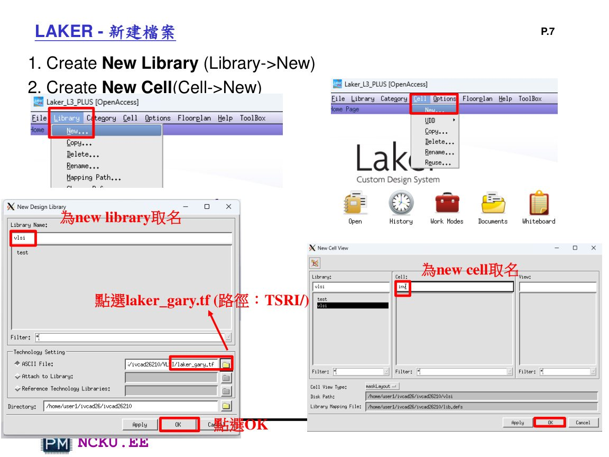
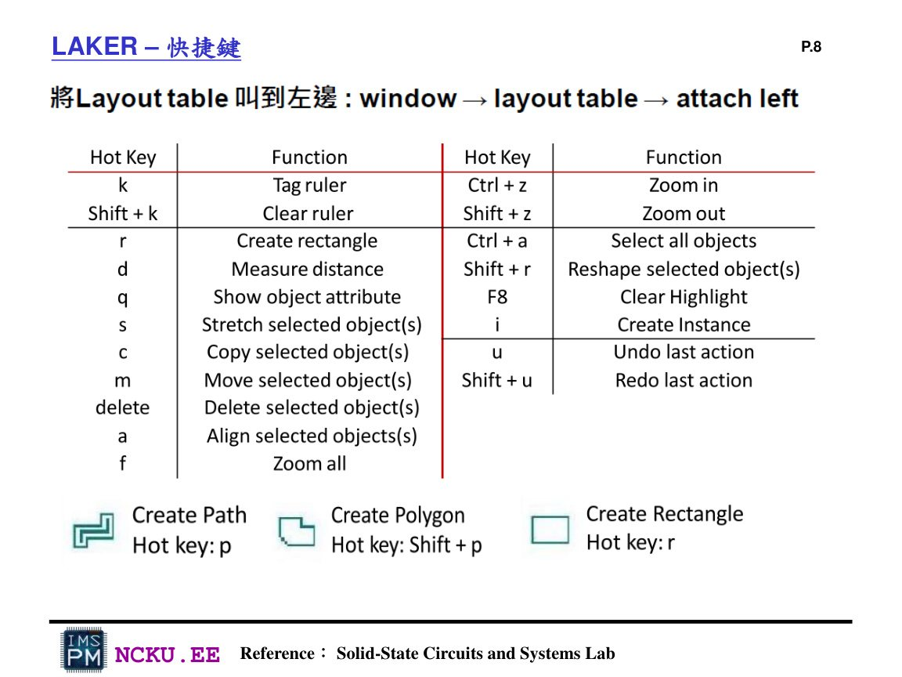
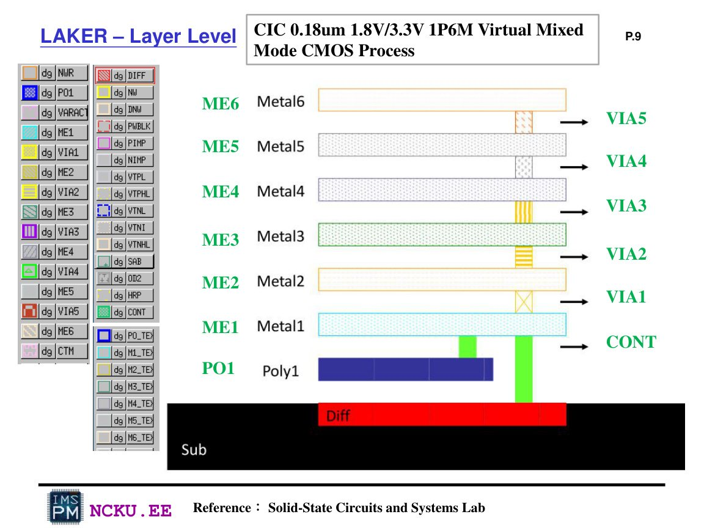
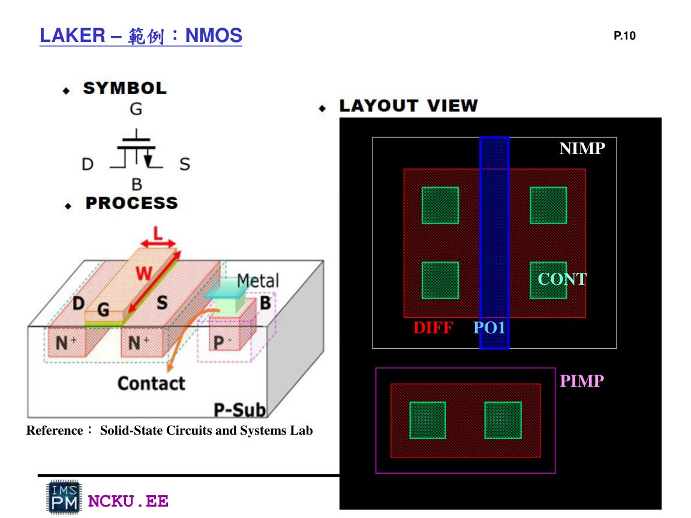
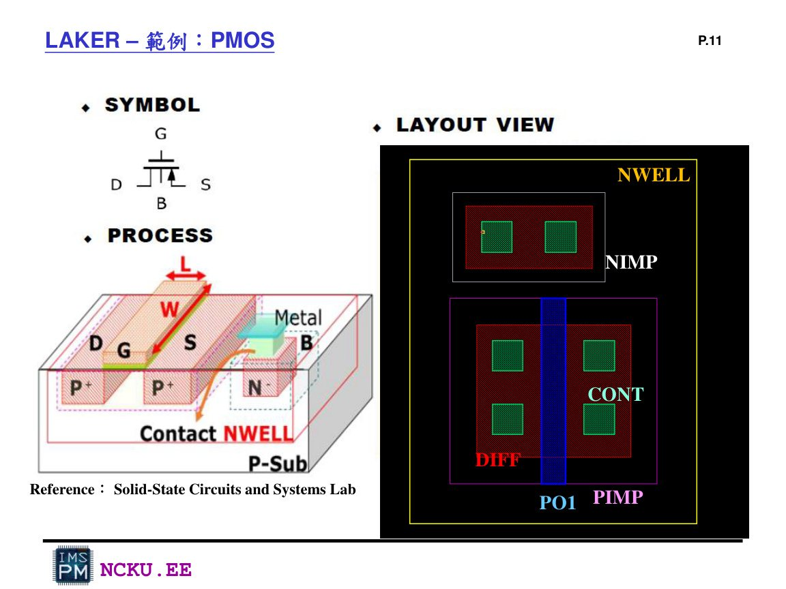

作業九：Laker Layout 完整流程
Lab9 接續 Lab8：用 Laker 畫 NAND / NOR layout，並使用 Calibre 完成 DRC、LVS、PEX，再用 HSPICE 做 post-sim。
一、Lab9 目的
Lab9 的目的不是重新設計邏輯，而是把 Lab8 已經驗證過的 NAND 與 NOR 從 transistor-level netlist 延伸到實體 layout。Layout 做完後，要確認圖形符合 design rules，並確認 layout 抽出的電路與原本 schematic / netlist 相同，最後抽出寄生電阻與電容做 post-layout simulation。
二、Lab9 規格

Lab9 作業規格：完成 NAND / NOR layout，PMOS 1u/0.18u，NMOS 0.5u/0.18u。
| 項目 | 要求 |
|---|---|
| 電路 | NAND、NOR |
| PMOS | W/L = 1u / 0.18u |
| NMOS | W/L = 0.5u / 0.18u |
| 驗證 | DRC、LVS、PEX 成功 |
| 模擬 | 完成 post-sim 並與 Lab8 pre-sim 比較 |
三、工具與啟動

Laker 用來畫 layout；Calibre 用來跑 DRC / LVS / PEX；HSPICE 用來 post-sim。

每次重新登入伺服器後，需 source Laker 環境，再輸入 laker &。
source /usr/cad/synopsys/CIC/laker_oa.cshrc laker &
四、Laker 新建資料與快捷鍵

Laker 建立 New Library / New Cell，並選擇 laker_gary.tf technology file。

Laker 常用快捷鍵：r 矩形、p path、d 量距、q 屬性、m 移動、delete 刪除。
五、Layer 與 MOS 結構

CIC 0.18um 1P6M layer：PO1、DIFF、CONT、ME1~ME6、VIA。

NMOS layout example：DIFF、PO1、CONT、NIMP/PIMP 與 body。

PMOS layout example：需要 NWELL，body 通常接 VDD。